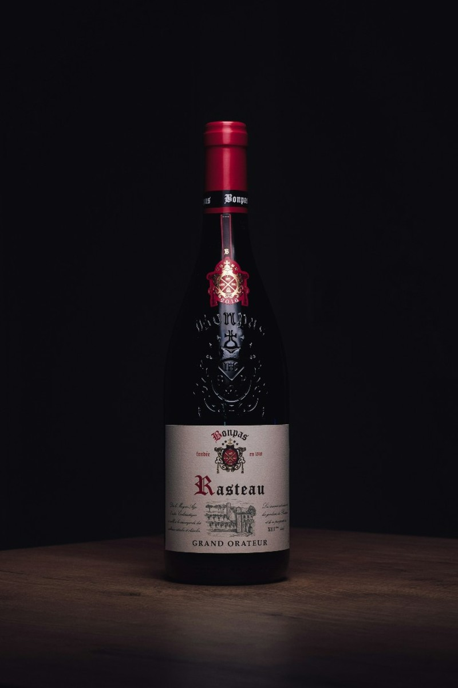

Hos oss hittar du de bästa Napoli-pizzorna tillagade med kärlek och noggrant utvalda ingredienser.
Våra pizzor bakas i vedeldad ugn för att ge den autentiska smaken och den perfekta krispiga skorpan.
Kom och njut av en äkta pizzaupplevelse som tar dig direkt till Neapel!

Vi erbjuder vårt eget vin, noggrant framställt med passion och tradition. Varje flaska är ett resultat av att vi följer hela processen, från druva till glas, för att säkerställa en unik och högkvalitativ smakupplevelse. Njut av ett vin som är perfekt anpassat för att förhöja våra rätter och din matupplevelse.
